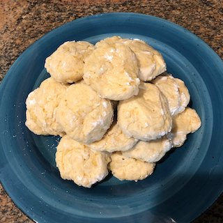

Orange & Lemon Butter Cookies

Description
Updated classic butter cookies with bright citrus
flavor and a sweet orange glaze.
Ingredients
- 2 sheets Reynolds® Parchment Paper
- ½ cup butter, softened
- ¾ cup granulated sugar
- 1 egg
- 2 tablespoons finely shredded orange peel
- 1 tablespoon finely shredded lemon peel
- 1 teaspoon vanilla
- 2 cups all-purpose flour
- ½ teaspoon baking powder
- ¼ teaspoon salt
- ⅓ cup milk
Citrus Glaze:
- 2 tablespoons melted butter
- 1 tablespoon orange juice, or as needed
- ¾ cup powdered sugar
Steps
- Preheat oven to 350 degrees F.
Line two cookie sheets with Reynolds® Parchment Paper;
set aside.
- Beat the butter and sugar in a large bowl using an electric
mixer about 2 minutes or until light and fluffy.
Add the egg, orange peel, lemon peel, and vanilla and beat
until well blended.
- Combine the flour, baking powder, and salt in a medium bowl. Add half of flour mixture to the butter mixture, beating until just combined. Add the milk. Beat about 10 seconds.
Beat in the remaining flour mixture until just combined.
- Drop tablespoon-size mounds of dough on prepared cookie sheets.
- Bake 8 to 10 minutes or until set and the bottoms are browned. Transfer the cookies
on the parchment paper to a wire rack; cool completely.
- Drizzle with Citrus Glaze to serve.
- Citrus Glaze: In a small bowl combine melted butter and orange juice. Add powdered sugar; beat until smooth. If necessary, add more orange juice, 1/2 teaspoon at a time,
to make drizzling consistency. Drizzle over cookies.